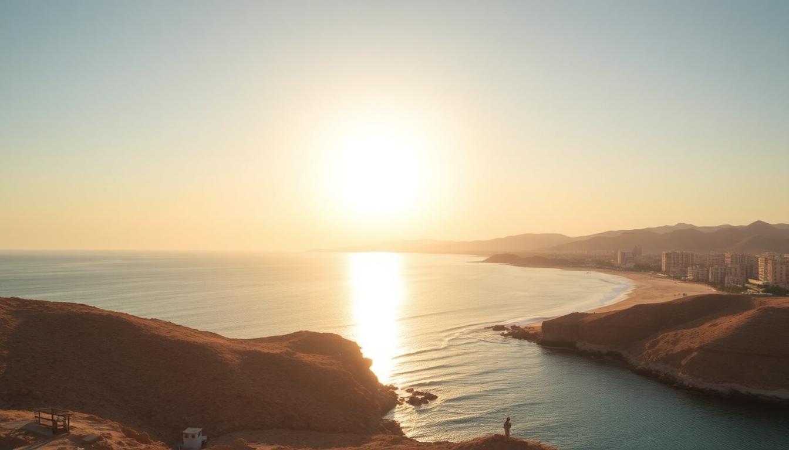

Best Beaches in Egypt: Red Sea & Mediterranean Guide

I spent three weeks hopping between the Red Sea and the Mediterranean coast last spring, and I’ll tell you straight: Egypt’s beaches are wildly different depending on which side you pick. The Red Sea is all about world-class snorkeling, desert-meets-coral landscapes, and resort bubbles. The Mediterranean is more about gritty city beaches, seafood shacks, and local summer vibes. Here’s what I found actually worth your time.
Which Red Sea resort is better for snorkeling: Hurghada or Sharm El Sheikh?
It depends on what kind of water access you want. In Hurghada, I stayed at Steigenberger Al Dau Beach Hotel on the old town strip, and the house reef there was decent but crowded with day-trippers. The real game-changer was taking a boat out to Giftun Islands National Park — the coral is healthier, and I saw clownfish, parrotfish, and a sea turtle within ten minutes of jumping in.
Sharm El Sheikh’s snorkeling is more dramatic. I booked a day at Ras Mohammed National Park, and the Yolanda Reef drop-off is genuinely impressive. You swim straight from the beach into a wall of coral. The downside? Sharm’s resorts are more isolated. I stayed at Savoy Sharm El Sheikh, which had a nice private beach, but you’ll pay resort prices for everything.
Best spots for snorkeling:
- Giftun Islands (Hurghada) — boat trip required, coral is pristine
- Ras Mohammed (Sharm) — entry fee 5 USD, best accessed by taxi from town
- Tiran Island (Sharm) — quieter than Ras Mohammed, strong currents
- Mahmya Beach (Hurghada) — private stretch on Giftun, day pass about 20 USD
Is Alexandria worth visiting for the beach?
Honestly? Only if you’re already in Cairo and want a weekend escape from the chaos. Alexandria’s beaches are not the postcard kind. The water is hazy, and the sand is more brown than gold. But the vibe is something else.
I spent a Friday at Montazah Beach — it’s a public beach attached to the old royal gardens, and locals pack in with coolers and speakers. The water was swimmable, though I wouldn’t snorkel here. For a quieter option, Maamoura Beach has a small entrance fee (about 3 USD) and cleaner water. Avoid Stanley Beach — it’s right next to the corniche road, so you’re basically swimming next to traffic.
What I’d do in Alexandria instead of beach time:
- Eat grilled fish at Mohamed Ahmed restaurant — best fuul and falafel in the city
- Walk the Corniche at sunset from Silsila to Qaitbay Citadel
- Stay at Steigenberger Cecil Hotel — old-school colonial charm, right on the water
What’s the best beach for a non-resort traveler in Hurghada?
If you’re not staying at an all-inclusive, public beach access in Hurghada is limited. Most of the coastline is walled off by resorts. I found two reliable spots.
El Dahar Public Beach is the main free option. It’s small, the sand is okay, and there are basic changing rooms. Expect hawkers selling sunglasses and camel rides every two minutes. Not relaxing, but cheap.
For a proper day without a hotel booking, Beach at Sindbad Aqua Park lets you pay a day-use fee (around 10 USD) for their private stretch, plus you get access to the water slides. I did that twice — worth it if you’re with kids or just want a lounger without the resort markup.
Public beach options in Hurghada:
- El Dahar Beach — free, basic facilities, busy
- Sindbad Aqua Park Beach — day pass, cleaner water, good for families
- Mangroovy Beach (El Gouna) — 30-minute drive north, day pass about 15 USD, much quieter
Should I stay in Sharm El Sheikh’s Naama Bay or Old Market?
I tried both. Naama Bay is the tourist hub — think strip of chain restaurants, neon-lit bars, and hotels packed shoulder-to-shoulder. I stayed at Rixos Sharm El Sheikh on the north end of the bay, and the beach was decent, but walking the promenade at night felt like a theme park. If you want convenience and nightlife, it works.
Old Market (Sharm El Maya) is grittier and more local. I ate at El Masrien for koshari and grilled chicken — 3 USD for a full meal. The beach here is smaller and rockier, but the vibe is real. You’ll get cheaper boat trips to Ras Mohammed from this side too. I’d pick Old Market if you’re on a budget or want to avoid the all-inclusive bubble.
Where to stay in Sharm:
- Naama Bay — Rixos, Hilton, Marriott — polished but generic
- Old Market — Sharm Cliff Resort, budget-friendly, closer to local restaurants
- Ras Um Sid — quieter area, good for diving, but you’ll need taxis
When is the best time to visit Egypt’s beaches?
March through May and September through November are the sweet spots. I went in late April, and the Red Sea water was 24°C (75°F) — perfect for snorkeling without a wetsuit. Air temps hit 30°C (86°F) during the day, but evenings cooled down.
Avoid June through August. I talked to a hotel manager in Hurghada who said July sees 40°C (104°F) and humidity that makes sitting on the sand miserable. Alexandria is slightly better in summer because of the breeze, but the beaches get packed with Cairenes escaping the heat.
Best months by region:
- Red Sea (Hurghada, Sharm) — April–May, September–October
- Mediterranean (Alexandria) — May–June, September
- Worst months everywhere — July–August (too hot, crowded, expensive)
FAQ
Is it safe to swim in the Red Sea at night? No. I wouldn’t do it. Currents can shift, and some areas have strong tides. Plus, some marine life (like stonefish) is more active after dark. Stick to daylight hours, and always swim where other people are.
Do I need a visa to visit Sharm El Sheikh or Hurghada? For most nationalities, you get a free 14-day entry stamp if you fly directly into Sharm or Hurghada and stay within the South Sinai or Red Sea governorates. If you plan to go to Cairo or Alexandria, you’ll need a standard tourist visa (25 USD at the airport).
Are the beaches in Alexandria clean enough to swim in? Yes, but choose carefully. Montazah and Maamoura are generally okay. Avoid the eastern harbor beaches near the port — water quality is poor. I always check local news before swimming; Alexandria occasionally closes beaches after heavy rain due to sewage overflow.
Conclusion
- For snorkeling: Sharm El Sheikh’s Ras Mohammed beats Hurghada’s Giftun Islands — but both are excellent.
- For a relaxed beach day: Pay for a day pass at a resort in Hurghada or El Gouna; public beaches are underwhelming.
- For budget travelers: Skip the all-inclusive resorts in Naama Bay and stay near Sharm’s Old Market or Hurghada’s El Dahar.
- For city + beach combo: Alexandria works for a weekend, but don’t expect turquoise water.
- Timing matters: April–May and September–October give you the best water temps and fewer crowds.